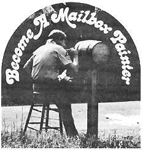

Working for the Fun of It
My grandfather has earned money in more ways than I can count, but of all the buck-making ventures he's invented or been a part of in his 82 years, none required such a low investment-or yielded such quick returns-as mailbox painting.
Grandpa's services in this capacity ranged from a simple lettering job on the box as it was . . . through painting both the box and post . . . to painting the customer's name in the midst of various decorations.
His charge varied, depending on how elaborate a particular assignment was and how pressed for cash he happened to be at the time. He'd usually quote two bucks just to do the name on both sides of the box . . . although some of his mailbox masterpieces went for $10 and more.
Granddad Curtis' painting equipment consisted of [1] a goodly assortment of brushes (small, artist's sizes to 2-1/2-inch-wide models), [2] eight to twelve colors of paint ( my grandfather liked Rustoleum, but any good outdoor paint should do), and [3] clean-up materials (thinner and rags). In addition, Grandpa carried along a couple of wire brushes which he used to prepare surfaces for paint . . . and a hammer, nails, screwdriver, and screws for securing loose mailboxes to their supports.
Armed with just these materials, Gramp would go door to door until he landed an assignment and then do the job on the spot. His policy was that he expected to be paid as soon as the task was finished, but he didn't expect to be paid if the customer wasn't satisfied. (As it turned out, the vast majority of his clientele were satisfied.)
If this sounds like something you might want to try, you'd be wise to practice a bit first to see if you can develop a few styles of lettering and-in general-satisfy yourself that you can do a good-looking job. Not everyone is a postal box Picasso . . . which is why I can't give you firsthand advice on this subject. (Try as I may, I've been forced to admit that I'm a sloppy painter.)
One last word of wisdom based on Grandpa Curtis' experience: Try to get assignments in an area where houses-or at least mailboxes-are close together. Once you've prettied up a couple of boxes, that keep-up-with-the-Joneses phenomenon will do half your marketing for you!
|
 |
|
|